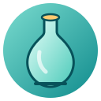

Гончарный круг
Симметричные формы, созданные вращением и давлением рук.
Классика
Маленький шедевр глины, большая история формы и света
Загружаем вазу… 0%
😢 Не удалось загрузить 3D-модель — показываем запасную вазу.
Проверьте путь к файлу в админ-панели и откройте сайт через локальный сервер (не file://).Крутите мышью или пальцем · колесо / щипок — масштаб
Ваза прайм покачивание
Ваза — сосуд, созданный из глины, стекла, фарфора или металла. Она хранит не только воду и цветы, но и вкус эпохи: пропорции, орнамент и технику мастера.
От древних амфор до современных керамических объектов — ваза прошла путь от практичной посуды до предмета искусства. Её форма подчинена ритму, материалу и свету, а каждая трещина глазури делает её неповторимой.
Хорошая ваза читается как силуэт: горлышко, плечо, тулово и поддон. Декор не спорит с формой, а подчёркивает её.
Округлая или вытянутая часть — главный объём и характер изделия.
Узкое горло удерживает воду и задаёт ритм силуэту.
Стекловидное покрытие защищает глину и играет на свету.
Изогнутые ручки амфоры делают сосуд удобным и выразительным.
Линии, точки и растительные мотивы рассказывают о культуре мастера.
Матовая, зернистая или зеркальная поверхность меняет восприятие формы.
📏 В музейных коллекциях высота классической вазы колеблется от 8 до 60 см — всё зависит от назначения.
Каждый этап меняет материал: глина пластична, черепок твёрд, а глазурь придаёт цвет и блеск. Именно сочетание этих состояний делает керамику живой.
Симметричные формы, созданные вращением и давлением рук.
КлассикаСвободные асимметричные силуэты и фактурные поверхности.
От рук мастераТёплый красноватый цвет неглазурованной глины после обжига.
От глиныТонкий белый материал с лёгкой прозрачностью на просвет.
От каолинаПотёки, крапления и градиенты — цвет закрепляется стеклом.
От минераловКобальт, ангобы и надглазурные краски превращают вазу в холст.
От кистиОрнамент продавливается в ещё мягкую глину штампом.
От штампаВыдувание и литьё дают прозрачные вазы с тонкой стенкой.
От пескаБыстрый обжиг и охлаждение углями создают непредсказуемые пятна.
От огняЦифровая модель становится прототипом или готовой вазой из керамики.
От файлаГлина используется для хранения воды и зерна — начало ремесла.
Появляются расписные сосуды с геометрическим орнаментом.
Ритмичные полосы и фигуры людей превращают вазу в рассказ.
Мастера Афин создают знаменитые амфоры с мифологическими сценами.
Лёгкий белый материал открывает новую эпоху тонкой керамики.
Яркая глазурь и роспись делают вазу центральным украшением интерьера.
Европейские мануфактуры осваивают секрет твёрдого фарфора.
Форма очищается от декора: важны линия, пропорция и материал.
Художник работает в своей мастерской и подписывает каждое изделие.
Модель создаётся в компьютере, печатается и просматривается в дополненной реальности.
Высокий сосуд с двумя ручками и узким горлом. Служила для вина, масла и воды, а сегодня — главный символ античной керамики.
Простая форма с широким туловом и удобным сливом. Его гончары делали каждый день — и до сих пор делают.
Устойчивое основание и свободное горлышко: форма создана так, чтобы букет стоял ровно и долго радовал глаз.
Асимметрия, неожиданная фактура и подпись мастера. Такой сосуд ценят не за вместимость, а за идею.
Этот сайт-презентация подготовлен как учебный проект: керамическая тема стала основой для изучения вёрстки, 3D-графики и работы с контентом.

Учебное заведение
Воркута
3D-модель вазы универсальна: её можно печатать, анимировать, встраивать в сайты и использовать в обучении.
Модель экспортируется в STL и становится прототипом изделия или сувениром.
Импорт в Unity, Unreal или Godot: ваза как объект сцены или декорация уровня.
Через WebXR ваза «появляется» в комнате — удобно для магазина и выставки.
Основа для роликов в Blender и Cinema 4D: свет, материалы и камера.
Интерактивный просмотр на сайте без установки программ — как в этом проекте.
Изучение сеток, UV-развёртки, материалов и форматов OBJ / GLTF.
Покупатель осматривает вазу со всех сторон перед заказом.
Быстрые рендеры с разным освещением для презентации и портфолио.
Слово «ваза» пришло из латинского vas — сосуд, посуда.
Древние амфоры использовали и как «упаковку»: в них перевозили вино, оливковое масло и рыбный соус.
Кобальтовая глазурь в китайском фарфоре была настолько ценной, что дала название целой эпохе — «голубой и белый».
Гончарный круг появился около 3500 лет до н. э. и стал первым «станком» в истории ремесла.
Техника раку требует всей огневой смелости: изделие вынимают из печи раскалённым и опускают в опилки.
Фарфор «поёт»: если легко ударить по тонкому краю, он издает высокий чистый звук.
Современные дизайнеры печатают вазы из керамических паст — форма, невозможная на гончарном круге.